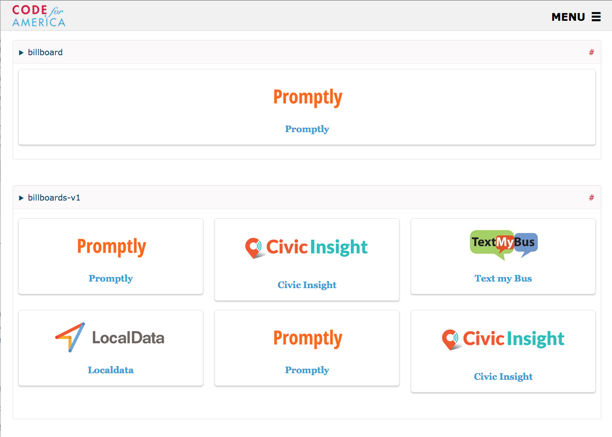
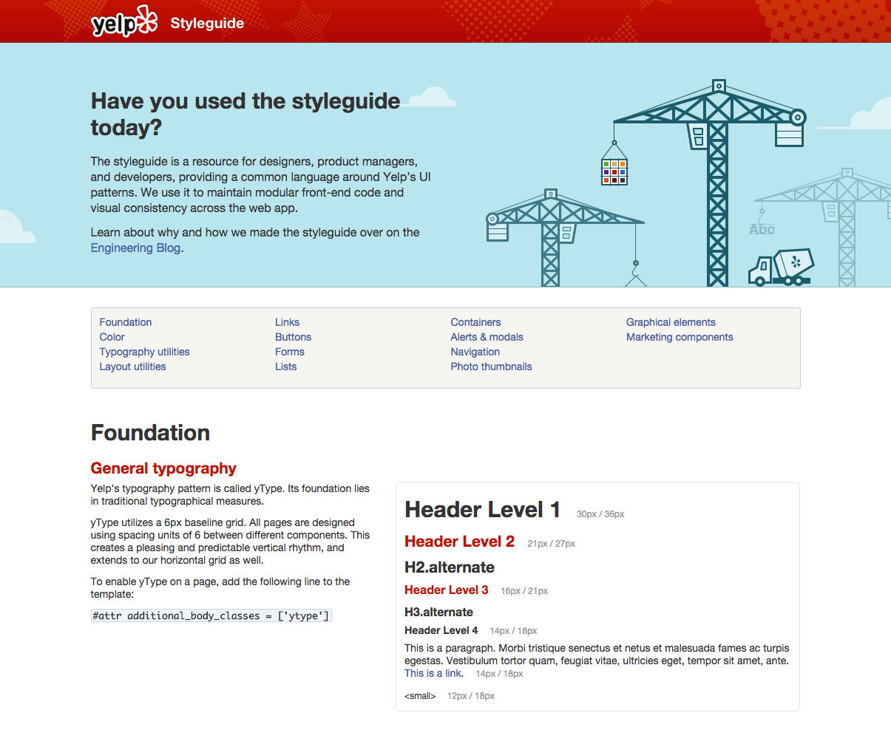
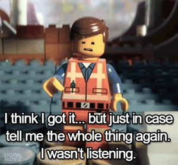
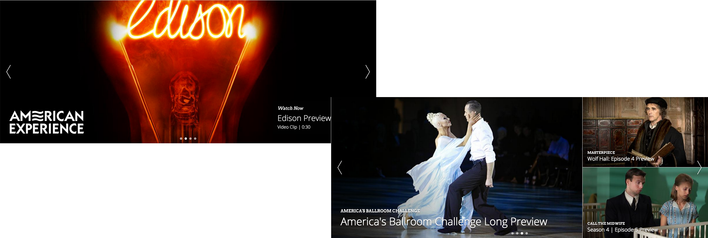
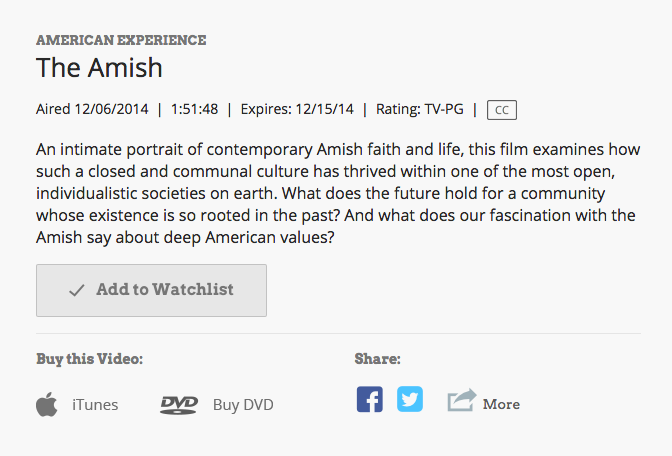
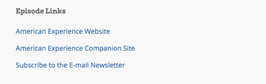
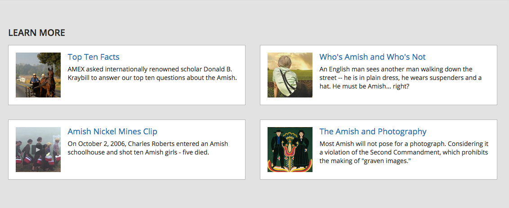

PBS Component Library
Kickoff Meeting - 9/2/15
Facilitated by Chip Cullen / @chipcullen
Outcomes
- Shared understanding and buy in of
- Needs and benefits
- Governance
- Taxonomy / Categories
- Agreed upon names for problematic components
Agenda
- (5 mins) Recap of what a component library is
- (15 minutes) Report to the group what was heard during interviews, open discussion of new thoughts
- (10 minutes) Governance model, pinpoint cultural change
- (15 minutes) Presentation of categories suggestion, request for feedback
- (10 minutes) Break
- (50 minutes) Group exercises for naming problematic components
- (15 minutes) Next actions, open discussion, Q&A

What is a component library?
A centralized design artifact that demonstrates the sum total of pieces that go into a digital product.
- "Style Guide"
- "Pattern Library"
Lonely Planet

Code for America

Yelp

Primary Benefits
- Design Consistency
- Concrete Vocabulary
- Demonstrate "What is Possible"
Interview Results
8 interviews were conducted across our organization to get a larger sense of
- What the benefits could be
- Potential pitfalls
- Ideas to incorporate
Large themes
- Unanimous positive reaction
- Bento could see the most benefit
- .org should be the immediate priority
Unanimous positive reaction
"We've needed this for a long time."
"This is way overdue."

Bento could see the most benefit
Single biggest thing:
Demonstrate what can be done with Bento
Aid in
- Marketing the product
- Preventing support requests
- Easier "drive by" documentation
.org should be the immediate priority
- Higher priority product currently
- Audience is internal
- Would allow for the process to get solidified
What does success look like?
What does success look like?
- An online, public resource that documents all* components
- Provides clear nomenclature
- Actively used by entire digital team
- Kept up to date and is trusted to be so
- Other thoughts?
What does failure look like?

What does failure look like?
- Falls out of date, is abandoned
- Is not trusted, thus is ignored
- Fails to provide central design reference
New thoughts?
Have you worked with a simliar library in the past?
Any new benefits that you can think of?
(Open discussion)
Governance
Categories
- Content
- Global
- Personalization
- Social
- Sponsorship
- Search
- Video
- Thoughts?
Break!
Group Exercise:
Naming problematic components
Naming problematic components
- Six problematic components
- Two minutes to think of as many names as possible
- Ideas will be gathered
- Emerging names will be voted on with dots
Naming Criteria
Aim for
- Succinct
- Concrete
- Nouns
Avoid
- Aesthetic (e.g. "Red box")
- Context (e.g. "Home Page box")
- Content (e.g. "NOVA Tweets")
#1

- Rotates slides
- Each slide contains multiple different links
- Contains up to 5 slides, possibly unrelated
- May or may not contain branding
#2
- Two variations
- First one has one link per slide
- Second has multiple links, though each is a large target
#3

- Contains one image
- Descriptive text, with supporting meta title
- Single call to action
#4
- Describes a piece of video content
- Contains meta information and features
- Contains shopping / social links
#5
- Also associated with video content
- Contains external links
#6
- Also associated with video content
- Is optional
- Contains external links with thumbnails
Next Actions
- Chip: start building the site
- Chip & Meg: start documenting components
- Everyone: think in components
Open Discussion / Q&A
Thank you!